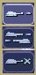

Gotten used to the interface? Okay, well, time to actually use our units.
To select a unit or cyborg, left click on it. Multiple units can be selected by clicking and dragging, and encasing the units in the drawn square, or by holding down Ctrl or Shift and clicking on multiple units.
To move selected units, left click on the terrain of the map. This can also be done over black areas of the map to explore the area. To attack an enemy unit, left click on it. You can deselect a unit (or a group of units) with a right-click.
You can set a path with waypoints, which units will visit each waypoint in order. You can also select a queue of enemies for units to attack. Hold Shift or Ctrl while selecting units or clicking places to move.
This also works for queuing construction of Oil Derricks and/or structures in a chain - hold the key down while building the structures one by one, then, when building the final structure, release the key.
To make groups of units, select the units you want and press Ctrl+[number] to make a group. A group of units will have a number next to it. To select a group of units you have made, press [number]. Groups can also be selected by double-clicking a unit in a group. To center the camera on a group, press the [number] twice.

Right-click on a unit (or select a unit and hit NUM0 on the numeric keypad), and a unit orders menu will appear above the command panel. This contains options to configure a unit’s behaviour.
Right-clicking on a factory will customize the orders of all future units that that factory produces.
| Optimum Range: Fires at most accurate range (default) Short Range: Moves to short range and attacks Long Range: Attacks at long range |

| Do or Die: Your unit will not retreat unless ordered to. (default) Retreat at Medium Damage: Your unit will retreat (return to repair facility, HQ, or LZ) at medium (yellow) damage Retreat at Heavy Damage: Your unit will retreat at heavy (red) damage |

 | Fire At Will: Fires at any enemy (default) Return Fire: Only fire if fired at Do Not Fire: Units will not fire |
| Patrol: Moves in a circle on a position. Just click an area after selecting it. Pursue: Pursue enemy. Guard: Stay near an area or structure. (default) Hold Position: Do not move under any circumstances. |

| Return for Repair: Unit will return to a Repair Facility Return to HQ: Unit will return to Command Center or LZ (campaign) Go To Transport: Unit will go and board transport |

Recycling a unit will send it to the nearest Repair Facility or Factory, and destroy it. Half the power used in making it will be refunded to you. The unit’s experience level will be placed in the next unit that is manufactured.
See also:  Unit
experience
Unit
experience
Units have experience levels depending on how many kills the unit has. A higher experience level means that a unit is more accurate, moves faster and takes less damage. An icon displaying a unit’s rank is displayed next to the unit’s health bar.
Hardpoints, bunkers, and other defensive structures cannot be ordered to shoot directly. However, you can assign artillery emplacements to a sensor tower. Nearby commanders with the indirect fire support option activated will also command these structures.